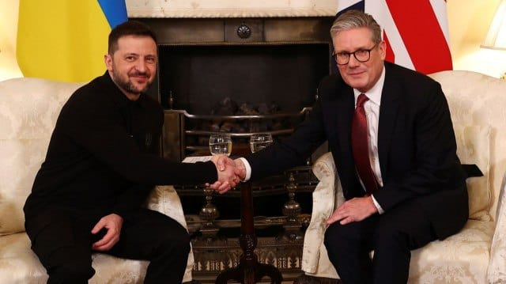

世界苦茶03月02日新闻 | 37条 | 中国社保支出成为最大支出项目

中国社保支出成为最大支出项目 | 中国限制AI高管赴美 | 中国房企2月因为低基数回升 | 美国联邦法院阻止两个特朗普政策 | 方大同逝世仅41岁
苦茶数据
美元兑人民币：7.29（昨日7.29，前日7.29）
美元兑日元：150.62（昨日149.68，前日149.17）
上证指数：休市（昨日3320，前日3358）
标普500指数：休市（昨日5954，前日5956）
比特币：85978（昨日85686，前日80436）
布伦特原油：72.81（昨日73.66，前日72.75）
中国新闻
• 习近平强调国家安全优先 ：在中国全国两会召开在即、俄乌离止战前景不明的大背景下，中共总书记习近平强调，防范化解各类风险是“平安中国”建设的重要任务，要把捍卫国家政治安全摆在首位，坚定维护国家政权安全、制度安全、意识形态安全。对于外界关注中共高层是否将国家安全凌驾于经济发展之上，受访中国大陆学者分析，这不是孰轻孰重问题，而是中国国家安全与发展相互依赖，而高层选择此时再谈国家安全，是因俄乌战争未止、美国反反复复，世界正走向丛林法则，再次凸显国家综合实力强大的重要性。台湾学者则认为，两会下周即将登场，北京正面对经济疲软和美中贸易战内外夹击考验，中共领导人此时再提安全问题，主要针对内外形势变化带来的挑战。
• 珠峰景区恢复开放 ：因西藏日喀则地震暂停对外开放的珠峰景区，星期六零时恢复开放。珠穆朗玛峰北坡位于西藏日喀则市定日县境内。今年1月7日定日县发生6.8级地震，造成重大人员伤亡，大量房屋倒塌。珠峰景区于当天10时起暂停对外开放。据新华社报道，中国科学院珠穆朗玛峰大气与环境综合观测研究站站长马伟强说，截至2月28日，珠穆朗玛峰未受地震影响，未观测到有明显的冰崩、雪崩或地质变动。
• 香港政府公务员冻薪 ：香港政府宣布全体公务员冻薪后，公务员事务局局长杨何蓓茵说，此次冻薪规模前所未见，展现出大家的团结、决心与共担精神，共同应对当前的公共财政压力。由于财政赤字问题严峻，香港政府在最新的财政预算案宣布大幅开源节流，包括全体公务员冻薪，以及在本届政府任期内削减约一万个职位。杨何蓓茵星期六在脸书发文称，她在公务员事务局星期五举行的简介会上说，此次冻薪规模前所未见，“显示大家的团结性、决心和共同承担，以应对当前公共财政的压力”。
• 中国社保支出超教育成最大预算项 ：随着中国人口老龄化加速，社会保障和就业支出成为公共预算最大支出项。中国财政部上月发布的数据显示，2024年全国一般公共预算支出科目中，社会保障和就业支出为4万2114亿元人民币，教育支出则为4万2076亿元，社保就业支出超过教育支出，成为最大支出科目。据第一财经报道，自财政部公开支出科目以来，教育支出规模一直稳居榜首，直至2024年社保和就业支出首次反超教育支出。
• 人大代表建议加强女性生育力保护 ：中国全国人大代表张齐建议，通过加强青少年性教育等，持续强化女性生育力保护，阻断少子化趋势。据澎湃新闻报道，全国人大代表、浙江省嘉兴市第一医院内科主任兼内科学教研室主任张齐关注“女性生育力保护”话题，将向3月5日开幕的十四届全国人大三次会议提交关于持续加强女性生育力保护，阻断少子化趋势的建议。具体措施包括把向青少年普及性与生殖健康教育纳入对各级政府健康推进工作的考核，加强对高龄未孕人群生育力的评估和指导服务等。
• 歌手方大同去世，享年41岁 ：台湾金曲歌王方大同所属的“赋音乐”，星期六中午发出声明，透露歌手方大同于2月21日早晨离世，得年41岁。赋音乐在声明中写道：“以积极的态度面对顽疾五年，方大同于2025年2月21日早晨，平静而安详地离开了这个世界，前往生命旅程的另一个领域，继续他的使命与梦想。他所留下的音乐与图画小说是永恒的精神财富。 ”据台媒报道，方大同身边的亲友和员工，哭着表示很遗憾不舍及痛心：“老板已前往人生的下一段旅程。”据说他生前和大家相处亦师亦友。方大同一向低调，据知他的亲友也称后事不多说明，吁请大家保留一点空间给家属。
亚太印太新闻
• 台湾陆委会清查公务员大陆证件 ：台湾在野的国民党立委翁晓玲批评，台湾的大陆委员会要求部分政府单位清查公务人员持有中国大陆证件情形为违法滥权。陆委会回应称，相关主管机关依法行政，没有任何不妥，不存在违法情事。翁晓玲星期五在脸书发文质疑，陆委会有何权力要求公教人员签下保证书，保证未在中国大陆设有户籍、领用中国大陆护照、身分证、定居证或居住证，还恐吓若有不实要负法律责任，“是依据哪项法律规定？”她点名陆委会、铨叙部、教育部三个单位。“这三个机关看来是经费太多，尚有余力做这些蠢事，年底审预算时，一定要好好检讨这几个机关”。
• 陈水扁警告罢免行动后果 ：台湾前总统陈水扁就大罢免行动示警，罢免不是为了一时爽，要注意后续的政治后座力和后遗症。综合台湾《联合报》和TVBS新闻网报道，网络节目《贺珑夜夜秀》星期四释出陈水扁的访谈内容。陈水扁形容，台湾政坛本次爆发的大罢免行动前所未有，即便在美日等民主国家都不曾发生过。陈水扁说，他在2000年当选台湾总统时也面临朝小野大的困境，民进党在立法院只有三分之一席位。但当时政局却没有现在那样对立，也从未想过要发起罢免行动。
• 台湾九名立委罢免案未通过 ：台湾中选会公布九名民进党立委罢免案未通过后，中广董事长赵少康痛批国民党战力弱，只想防守不进攻。赵少康星期五在脸书发文说，中选会公布九名民进党立委的罢免案未通过第一阶段连署，且先前传出有好几项针对绿委的罢免案涉嫌造假，这些都已严重影响国民党形象，让支持者失望。贴文说，民进党已摆明是投入府院党所有资源展开罢免行动，国民党竟“摆烂、耍废”，连罢免绿委第一阶段都无法通过，第二阶段要怎么办？“身为在野党，怎么可以这么没出息，只想防守不进攻？”
• 日本护卫舰航经台湾海峡 ：日本海上自卫队护卫舰曾在2月上旬航过台湾海峡，以牵制在日本及台湾周边加强军事压力的中国大陆。日本共同社星期六引述政府消息称，日本海上自卫队护卫舰“秋月”在2月上旬通过台湾海峡。这是自去年9月以来，日本舰艇再次被确认通过台湾海峡。去年9月，日本护卫舰“涟”号与澳大利亚和新西兰舰艇共同航过台湾海峡，引起北京抗议。
• 新德里禁15年车龄车辆加油 ：印度首都新德里市政府星期六宣布，从下个月起，禁止车龄超过15年的车辆在当地添油，以遏制严重的污染问题。新德里早前已禁止车龄超过10年的柴油车和15年以上的汽油车在公路行驶，但仍有大批人违规行驶。德里环境部长曼金德星期六对记者说，为了“找出污染源和解决方案”，官员在一次马拉松会议上做出了停止为老旧的车辆提供燃油的决定。
• 柬埔寨驱逐119名泰国诈骗嫌犯 ：柬埔寨星期六称，已通过泰柬共同边界驱逐119名涉嫌网络诈骗的泰国人。柬埔寨移民局在脸书页面上发布信息说，这批泰国人包括61名男性和58名女性，他们通过偷渡进入并非法滞留在柬埔寨。据悉，这批泰国人是柬埔寨当局2月22日和23日在边境城市波贝突袭捣毁网络诈骗中心时，拘留的230名外国人当中的一部分。他们已于周六经由波贝边境检查站，移交给泰国当局。
科技新闻
• 中国限制AI高管赴美 ：中国政府据报以国家安全和防止机密信息外泄为由，要求中国顶尖人工智能企业高管和研究人员避免前往美国和其盟国。《华尔街日报》星期五引述知情人士报道，中国政府担心这些人员出国后，会泄露中国AI发展进度等机密信息，并也害怕这些高管会像当年华为高层孟晚舟那样在海外遭到拘留，成为美中谈判的筹码。中国科技业人员透露，官方没有发出明确的出行禁令，但中国科技企业集中的上海、北京、浙江等地官方，都对科企提出了相关的指导，要求这些企业的高管在非紧急的情况下不要前往美国和其盟国。
• 瑞士央行反对比特币储备货币化 ：瑞士央行称，比特币本质上是个软件，波动性过大，不适合作为储备货币。瑞士民间正发起倡议，要举行公投决定是否采纳比特币为储备货币。在此背景下，瑞士央行行长施莱格尔在星期六出版的瑞士塔梅迪亚报章一篇访问中说：“加密货币不符合良好货币应具备的标准。”
• 越南支持马斯克星链项目 ：越南总理范明正说，政府计划迅速为马斯克的星链公司发放许可证，让它在越南开展卫星互联网试点项目。范明正星期六在河内与近40家美国企业会面时表示，越南正在采取措施重新平衡与美国的贸易顺差。他提到可能进口飞机、军备、液化天然气、农产品和医药品。越南政府正试图避免美国对它不断增长的出口征收关税，越南对美国的贸易顺差在去年达到历史新高，因而受到美国总统特朗普对等关税计划的潜在威胁。
财经新闻
• 泰国大米出口下降33% ：泰国大米出口商协会星期五预测，2025年第一季泰国大米出口将下降33%，降至200万吨。TREA会长查龙·劳塔玛塔表示，从1月1日到2月24日，泰国共出口了110万吨大米，比去年同期的160万吨下降了32%。他将出口预期降低归因于日益激烈的竞争，尤其来自印度的竞争。印度在此前为增加国内库存而长时间禁止出口后，刚刚恢复出口。
• 野村控股下调台湾股市评级 ：野村控股下调台湾股票的评级，原因是人工智能行业受到更严格的审查，以及美国总统特朗普计划对贸易伙伴征收关税。据彭博社报道，野村控股亚太区股票策略师赛斯等人在星期三的一份报告中写道，考虑到“对关税、晶片行业限制、更严格的AI主题审查以及估值和投资者持仓均处高位的担忧”，在野村的亚洲配置建议中，将台湾股票评级从战术性超配下调至中性。台湾基准股指今年以来基本持平，其中最大的成分股台积电下跌超过3%。相比之下，同期MSCI亚太指数的涨幅为3.6%。
• IBM中国投资公司停止运营 ：美国国际商业机器公司在中国的一家主要实体星期六正式停工停产。综合第一财经和《21世纪经济报道》报道，IBM方面证实，IBM中国投资公司从2025年3月1日起停止业务活动，相关办公场所也将停用，并称这是继公司去年宣布关闭研发部门后的延续举措。IBM中国投资公司是IBM在中国的主要实体之一，成立已有32年，一直致力于管理本地研发业务。
• 泰国与百度合作吸引中国游客 ：泰国政府与中国搜索引擎巨头百度达成数字营销合作，以重振泰国作为安全旅游目的地的形象。据彭博社报道，泰国旅游局星期四在曼谷与北京百度网讯科技有限公司签署一份意向书，百度网讯将利用数字营销、人工智能驱动的旅行洞察以及定制内容，改善泰国在中国游客心中的旅游形象。泰国旅游局局长吉亚帕布在一份声明中说，这份协议还旨在“推广重点旅游活动，并吸引优质中国游客于2025年来泰旅游”。
• 中国房企2月销售额回升 ：中国百强房企的2月份住宅销售额小幅增长，显示在持续刺激政策的推动下，房地产市场逐步企稳。克而瑞地产研究星期五在官方微信公众号发布的数据显示，今年2月，中国百强房企的新房销售额达1880亿元人民币，同比增长1.2%，此前的1月份销售额下降3.2%。彭博社报道称，三年多来，房地产市场低迷持续拖累中国经济，目前中国正在努力促其软着陆。惠誉认为，交易量的稳步反弹是价格企稳的先决条件。 （翻评：这个真的是因为低基数效应，去年2月百强房企销量同比降低60%，去年三月房企环比销售涨9成。）
• 日本考虑对华石墨电极征税 ：启动调查近一年后，日本认定从中国进口的石墨电极以不合理的低价销售，对本地产业构成实质性损失，因此将讨论是否对该商品征收反倾销税。据日本共同社报道，日本经济产业省与财务省星期五公布一项临时决定，提出上述内容。日本政府去年4月发布声明，宣布将对来自中国的石墨电极发起反倾销调查。调查原则上在一年内结束。
• 美商品贸易逆差创新高 ：美国1月份商品贸易逆差意外扩大至创纪录水平，因为在总统特朗普承诺的关税到来之前，进口额激增。美国商务部星期五公布的数据显示，商品贸易逆差扩大25.6%，至1533亿美元。彭博调查的经济师预估中值为1166亿美元。此数据未经通货膨胀调整。进口增长11.9%，至3254亿美元。出口增长2%，至1722亿美元，反映资本品增加。
• 中国2月制造业PMI回升 ：中国2月份制造业采购经理指数时隔一个月重返扩张，意味着北京的刺激措施可能已开始见效。中国国家统计局星期六公布，2月份制造业PMI为50.2，比1月份的49.1增加1.1个百分点，也高于路透社的预估中值49.9。去年12月的制造业PMI为50.1。从企业规模看，大型企业PMI为52.5，比1月上升2.6个百分点；中、小型企业PMI分别为49.2和46.3，比1月下降0.3和0.2个百分点。
俄乌战争
• 俄军占领乌东两村庄 ：莫斯科星期六宣称，俄罗斯军队已在乌克兰东部占领两个村庄。基辅官员说，俄罗斯的最新袭击造成一人死亡，19人受伤。俄罗斯国防部说，俄军已占领位于顿涅茨克东部的苏德内和布尔拉茨克两座村庄。这些村庄位于维利卡·诺沃西尔卡镇附近，它在1月底被俄军占领。
• 泽连斯基访英获贷款支持 ：乌克兰总统泽连斯基在与美国总统特朗普吵架后飞赴英国访问，受到首相斯塔默的热烈欢迎。乌英两国还签署超过22亿元英镑的贷款协议，以支持乌克兰的国防能力。综合外电报道，泽连斯基星期六抵达英国伦敦唐宁街，与斯塔默在首相官邸举行会晤。斯塔默对他致以热烈欢迎，并与他拥抱、合影。数百名乌克兰的支持者聚集在唐宁街外，欢迎泽连斯基的到访。斯塔默对泽连斯基说：“外面街头的欢呼声你也听到了，整个英国都支持你，我们会和乌克兰肩并肩，直到胜利。”
• “他捍卫了我们的荣誉”，乌克兰对泽连斯基与特朗普冲突的反应： 乌克兰民众纷纷支持总统弗拉基米尔·泽连斯基，在他周五于白宫遭遇激烈交锋后，指责唐纳德·特朗普和美国副总统J.D.万斯故意且冷酷地“挑起争端”。乌克兰国内对总统的坚定立场表示广泛支持，并对他在椭圆形办公室的“车祸式”会面感到震惊。同时，泽连斯基坚持认为，缺乏安全保障的和平协议毫无意义，俄罗斯不值得信任，这一立场也获得了赞誉。这一争端在周六仍在持续发酵。有报道称，特朗普声称泽连斯基“对他不敬”，且“尚未准备好实现和平”，并计划切断对乌克兰的所有军事援助。乌克兰高级官员表示，若缺乏实质性的安全承诺，与莫斯科达成的任何停火协议都无法持久。乌克兰副总理米哈伊洛·费多罗夫表示：“又一个普京的陷阱被识破。向总统致敬，他勇敢地直言不讳，捍卫了我们人民的荣誉。”
• 挪威燃料供应商拒绝向美国军舰供油，原因涉及乌克兰问题： 挪威燃料公司Haltbakk Bunkers宣布，将停止向驻挪美军以及停靠挪威港口的美军舰艇提供燃料，并对美国近期的乌克兰政策表示不满。该公司在一份措辞严厉的声明中批评了美国总统唐纳德·特朗普和副总统J.D.万斯在一场电视直播活动中的表现，称其为“有史以来最荒谬的闹剧”。Haltbakk Bunkers赞扬了乌克兰总统弗拉基米尔·泽连斯基的克制态度，并指责美国“上演了一场背后捅刀的真人秀”，声明称：“这让我们感到恶心。”因此，该公司宣布：“我们决定立即停止为驻挪美军及其舰艇提供燃料。不给美国人加油！”Haltbakk Bunkers还呼吁挪威及欧洲其他国家效仿其决定，并以“荣耀属于乌克兰”作为声明的结尾，以表支持。
• 捷克总统呼吁组建联盟以实现乌克兰的公正和平： 捷克总统彼得·帕维尔呼吁自由世界国家组建联盟，以推动乌克兰实现和平。他在社交平台X上发表声明，针对美国总统唐纳德·特朗普政府目前的立场表达了自己的观点。帕维尔认为，现在是时候考虑建立一个广泛的联盟，以实现乌克兰的公正和平。他写道：“以侵略者条件达成的‘和平’就是投降，这只会鼓励当前和未来的侵略者。自由世界必须挺身而出，对抗邪恶。”
其他新闻
• 美国批准对以色列30亿美元军售 ：美国五角大楼发表声明说，美国国务院已批准向以色列出售价值近30亿美元的炸弹、爆破工具和其他武器。这项军售计划已紧急通知美国国会。美国国防安全合作局星期五说，美国国务卿鲁比奥签署相关军售文件，“已确定并提供详细理由，证明情况紧急，需要立即向以政府出售”。这意味着此类军售通常不需要国会的批准。新华社引述媒体的报道说，虽然这些武器和相关设备计划于2026年开始交付，但五角大楼说“有可能部分采购将来自美国库存”，即一些武器将可能立即交付。
• 以色列延长加沙停火 ：以色列同意美国的建议，在回教斋戒月和犹太教逾越节期间，继续在加沙地带执行停火协议。以色列与哈马斯的加沙停火协议第一阶段，将于星期天晚些时候到期，关于下一阶段的谈判目前尚未取得结果。路透社报道，以色列总理办公室于当地时间星期天凌晨宣布，以色列决定采纳美国总统中东特使威特科夫的建议，在回教斋戒月和犹太教逾越节期间，在加沙地带继续实施停火。
• 哈马斯拒绝延长停火 ：为期六个星期的加沙停火协议将在星期天结束，哈马斯拒绝了以色列延长停火的条件，并说没有计划就结束战争的提议，进行谈判。哈马斯发言人卡西姆接受阿拉比电视台采访时说，以色列“试图通过混淆视听来将局势重新归零”，并且没有承诺完全从加沙撤军。以色列总理内坦亚胡说，如果协议破裂，他已准备好恢复战斗。他的发言人多斯特里说，内坦亚胡在安息日与国防首领举行了罕见的磋商。
• 美法院阻止特朗普政策 ：美国一名联邦法官星期五晚间发出庭令，阻止特朗普政府扣留向四个由民主党执政州属发放的联邦资金。这些州向19岁以下的跨性别青少年，提供性别确认护理。西雅图地方法院法官劳伦·金发布了初步禁令，阻止政府在科罗拉多州、明尼苏达州、俄勒冈州和华盛顿州，执行特朗普总统的两项行政命令。她认为这些命令违宪。特朗普在1月20日重返白宫的第一天，签署了一项行政命令，指示联邦政府仅承认男性和女性为两种生物学上截然不同的性别，并要求各相关机构确保拨款不支持“性别意识形态”。
• 库尔德工人党宣布停火 ：库尔德工人党星期六宣布与土耳其停火，结束长达40年争取自治的战争。库尔德工人党说，所有武装将在不受攻击的情况下开始停火，他们将响应被监禁领导人厄贾兰的呼吁，放下武器并解散。库尔德工人党还要求土耳其政府释放厄贾兰，让他正常工作与生活，并称只有在厄贾兰的领导下才能实现停火与解除武装。
• 马斯克迎来第14个孩子 ：美国总统特朗普的亲密顾问、亿万富翁伊隆·马斯克添丁，这是他的第14个孩子。马斯克的新生儿是他与其手下公司Neuralink高管希冯·齐利斯所生，两人已育有三个孩子。齐利斯没有透露孩子何时出生。路透社引述她在X上的一篇帖子说：“我们和伊隆讨论过，考虑到是美丽的Arcadia的生日，我们觉得最好直接分享我们出色而不可思议的儿子Seldon Lycurgus的信息。”
• 联合国批评美国削减外援 ：联合国秘书长古特雷斯指出，美国大幅削减对外援助将对世界最弱势群体造成严重后果，且有违美国的全球利益，希望美方撤销相关决定。古特雷斯星期五在纽约联合国总部举行的记者会上说，联合国机构和部分非政府组织过去两天收到美国将大幅削减资金的通知，这令他深感担忧。美国此举将影响到一系列关键项目，包括人道主义援助、减灾、发展、打击恐怖主义和贩毒等，并对世界最弱势群体造成破坏性后果。阿富汗、叙利亚、乌克兰、南苏丹等国家的人道主义援助行动都将受到不同程度的冲击。新华社引述他说，美国削减对外援助将使世界的健康、安全、繁荣受到损害，美国减少在全球人道主义事业中发挥作用和影响有违美国在全球的利益。他希望美方慎重考虑，并撤销相关决定。
• 塞尔维亚学生抗议政府腐败 ：塞尔维亚几万名民众星期六参加由学生主导的大型集会，誓言把这个陷入困境、民粹治理的巴尔干国家变成一个公正、法治的自由国家，许多人呼喊“我们应该过上更好的生活”。自从去年11月发生致命的火车站顶棚倒塌，造成15人死亡的事故以来，这个巴尔干国家的大学生一直举行全国抗议。批评人士说，是政府腐败造成了这起事故。塞尔维亚十多年来一直由亲俄罗斯的右翼政府牢牢统治。几乎每天的抗议活动都吸引几万人参加，动摇了总统亚历山大·武契奇对权力的牢固控制。
• 墨西哥移交29名毒枭示好美国 ：墨西哥当局星期四将多达29名贩毒集团成员移交给美国，多名高官也前往华府，试图阻止美国总统唐纳德·特朗普政府自下星期开始对墨西哥商品征收关税。这次移交行动规模空前，被认为是向特朗普政府示好，但专家称可能已违反墨西哥法律程序。被移交的人员包括多名知名毒枭，有数十年前贩运可卡因和海洛因的高龄贩毒集团首脑，也有近年向美国大规模贩运致命芬太尼的年轻毒枭。其中最著名的毒枭是拉斐尔·卡罗·金特罗，他因1985年绑架并谋杀美国缉毒局探员而被通缉，是联邦调查局十大通缉要犯之一。
• 联邦法官裁定特朗普解雇特别检察官办公室主任违法，将维持其职位： 华盛顿特区的一名联邦地区法官于周六深夜裁定，美国总统唐纳德・特朗普解雇特别检察官办公室主任的行为违法，使其得以继续留任。特朗普政府随后立即提交了上诉通知。由前总统乔・拜登任命为特别检察官办公室主任的汉普顿・德林格在 2 月 7 日被解雇后，向华盛顿特区的联邦法院对特朗普政府提起诉讼。华盛顿特区地方法官艾米・伯曼・杰克逊在周六的裁决中表示，法院认定德林格的解雇 “违法”，这一裁定符合最高法院的先例。